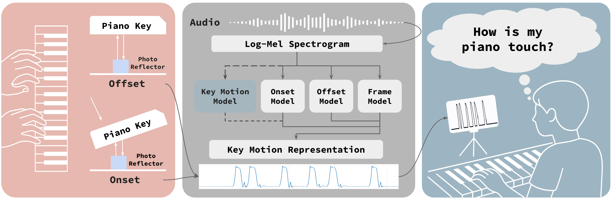
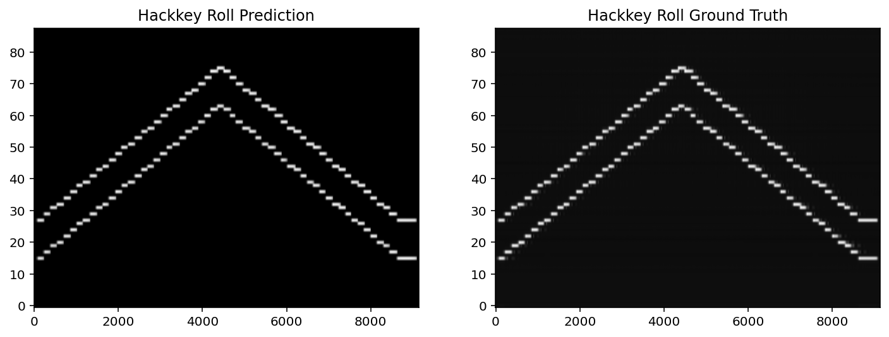
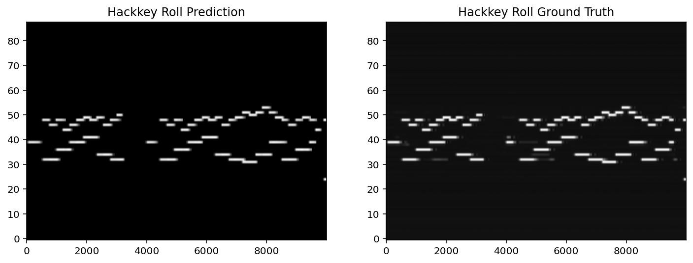
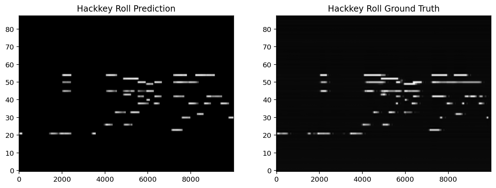

Jingjing Tang1 Shinichi Furuya2 Hayato Nishioka2 Momoko Shioki2 Geraint Wiggins13 György Fazekas1 Vincent K.M. Cheung2
1Centre for Digital Music, Queen Mary University of London, UK
2Sony Computer Science Laboratories, Shinakawa, Tokyo, Japan
3Vrije Universiteit Brussel, Belgium

Figure 1: Overview of the VPT system.
VPT (Visualising Pianists’ Touch) is an audio-to-key-motion transcription framework that predicts continuous piano key motion trajectories directly from performance audio. Unlike conventional MIDI representations, which describe performance as discrete note events, VPT aims to recover physically grounded expressive information such as fine-grained touch and key movement, making it possible to analyse how piano sound is produced in a more detailed and intuitive way without requiring specialised sensors. The model is trained on a unique dataset collected from a professional piano teaching programme by Sony CSL, containing 78.2 hours of synchronised audio and piano key-motion data from lessons, concerts, and skill-check sessions, covering a wide range of students, repertoire, and pedagogical contexts. Our work has been accepted for publication at CHI 2026.
1. An example from the SkillCheck subset, where the student plays a Hanno practice.

Figure 2: The comparison between the transcribed key motion rolls and the groundtruth. Note that we named key motion data by "Hackkey" here.
2. An example from the Lesson subset.

Figure 3: The comparison between the transcribed key motion rolls and the groundtruth. Note that we named key motion data by "Hackkey" here.
3. Another example from the Lesson subset, demostrating the effect of pedal to our system.

Figure 4: The comparison between the transcribed key motion rolls and the groundtruth. Note that we named key motion data by "Hackkey" here.
This work was supported by the UKRI Centre for Doctoral Training in Artificial Intelligence and Music (grant number EP/S022694/1), JST CREST (grant number JPMJCR20D4), JST CRONOS (grant number JPMJCS24N8), and Sony Computer Science Laboratories, Inc. Jingjing Tang is a research student jointly funded by the China Scholarship Council (grant number 202008440382) and Queen Mary University of London. Geraint Wiggins received funding from the Flemish Government under the "Onderzoeksprogramma Artificiële Intelligentie (AI) Vlaanderen". We thank the reviewers for their valuable feedback, which helped improve the quality of this work.
If you have any questions about the paper, please feel free to contact me via email: jingjing.tang@qmul.ac.uk